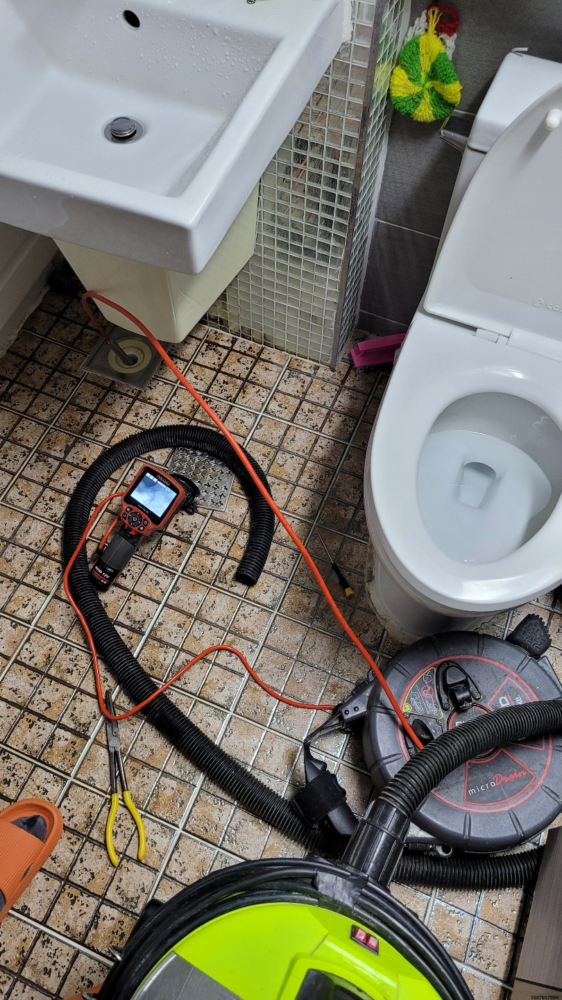
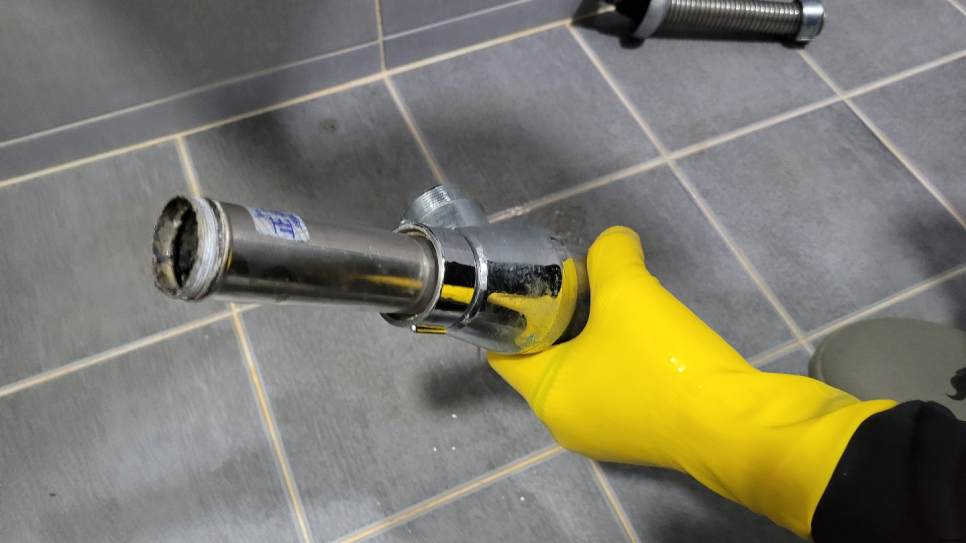
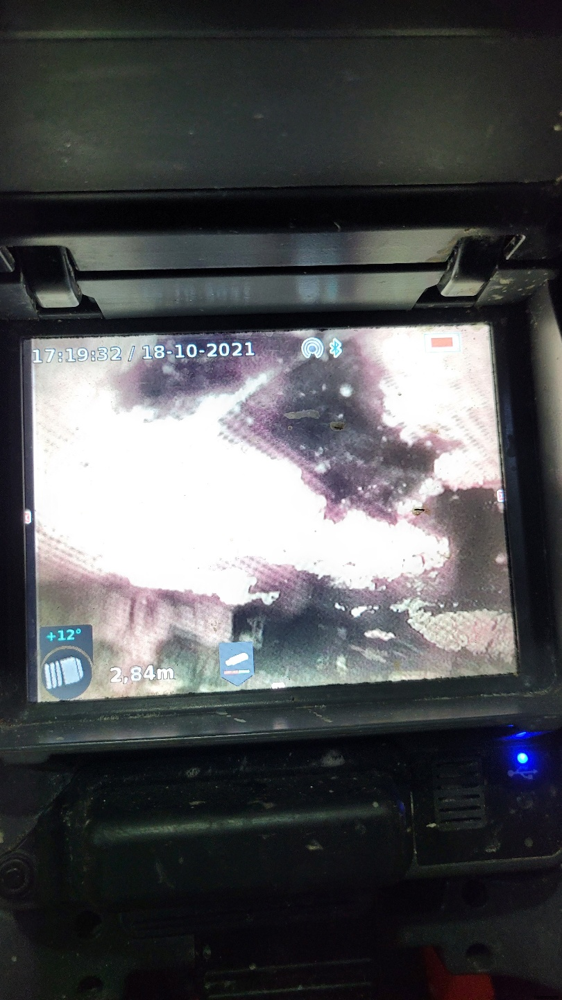
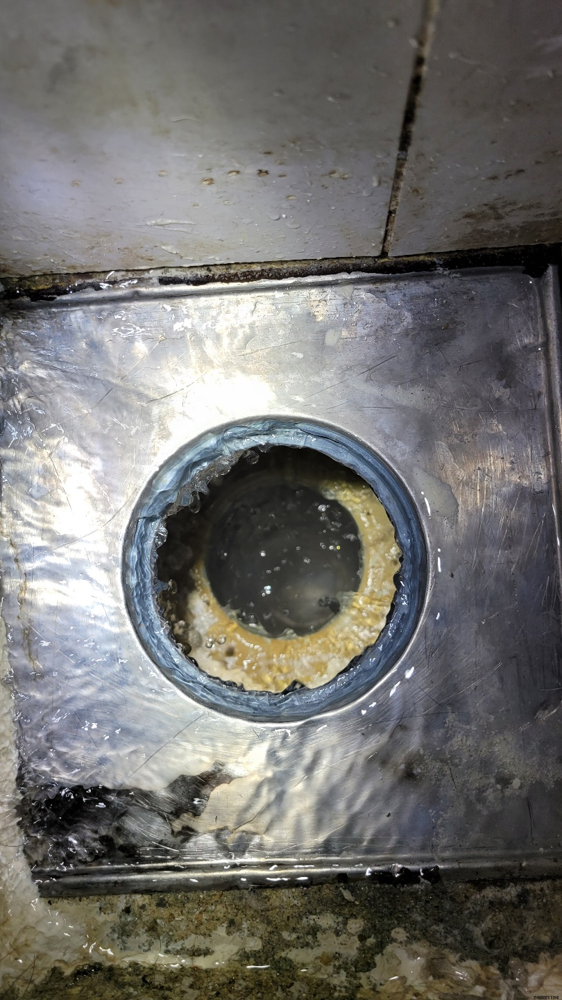
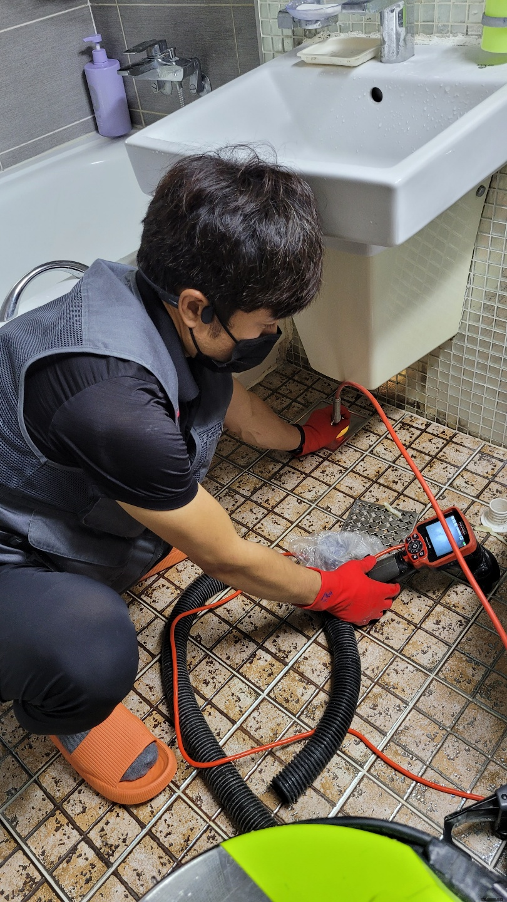
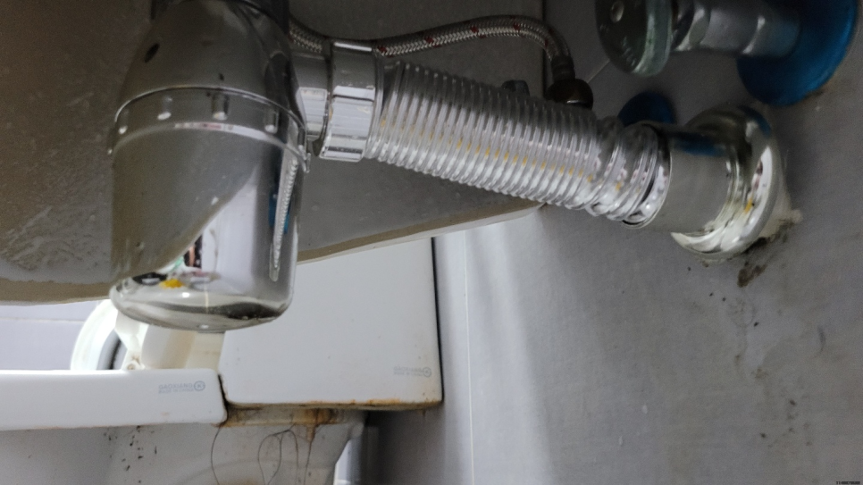

🏠 화성 향남 화장실하수구막힘뚫음 팔탄 하수구업체
화성 향남 싱크대막힘 전문 시공 후기

📋 작업 개요
- 위치: 화성 향남, 향남, 화성
- 서비스 유형: 싱크대막힘, 변기막힘, 하수구막힘, 배관막힘, 뚫는업체, 고압세척, 설비공사
- 작업 일시: 2023. 9. 11. 22:16
- 업체명: 하수구수사대 (010-5615-2118)
🔍 문제 상황
우리나라는 사계절 변화가 뚜렷한 만큼 계절의 영향을 많이 받는퇴수구 같은 설비에 문제가 발생할 확률이 높습니다.
정말많은 분들께서 뚜러뻥같은 약품을 필수로 구매할만큼 중요한요소로 생각하시는데요 하수막힘이 심한 경우에는 이 조차도 소용이 없을 때가 많답니다.
화성 향남 화장실하수구막힘뚫음 팔탄 하수구업체
막힌 것 자체가 스케일이 크기 때문에 오래 걸리더라도 실속 있는 업체에 의뢰 작업해야지라고 고려하시는 분들도 많습니다. 실력부분이 신중한 포인트라고 할지라도 늦기 전에 퇴수구뚫지 않으신다면 모든 피해를 여러분이 짊어지게 되므로 빨리 해결해야합니다.
뚫고 난 후에는 벌레 꼬임과 냄새까지 해결이 되는데 무리하게 배수구를 건드렸을 경우 공사를 해야 할상황도 생기니 배관 케어를 할 수 있는업체에 맡기시는 것이 바람직합니다.어디로 해야 할지 고민될 때 실력부터견적 등등 살펴보셔야 할 것들이 있습니다.

🔎 원인 분석
💡 전문가 진단: 화성 향남 화장실하수구막힘뚫음 팔탄 하수구업체
대다수분들이 배관이 막힘이 발생되면 그냥 혼자 하다가 처리를 하지못하고 저희 업체를 찾게됩니다. 업체 선정을 잘해야 고객님의 피해를 줄일 수가 있습니다. 하수전문 장비를 보유하고 있는지 배관 구조를 확실하게 파악할줄 알아야 합니다.
대부분 가격을 미리 정해놓고 출동하는 곳들은 어떤 상황이든 간에 같은 작업만 해주고 철수하는 받은 돈만큼만 일하곤 합니다. 상황을 직접 보기 전에 미리 정한 뒤 방문한 것이기 때문에 출동할 때 가지고 나가는 배출구장비들도 그다지 많지 않을 것입니다.
아픈 곳에 따라 처방법이 다르듯이 현장상황과 막힌 상태에 따라 사용되는 배출구장비가 달라져요. 그래서 설비업체를 찾으실때는 어떤 현장이든지그 자리에서 해결이 가능하도록 전문장비를 모두 갖춘 업체를 선정하여 주는 것이 좋습니다.
일단 자체적으로 해보고 안된다면 전문업체에 의뢰하는 것이 가장 이상적은 방법이라고 할 수 있어요. 배수구막힘으로 인해 문제가 생긴 다면 추후 더 골치 아파지는 상황이 발생할 수 있기때문입니다.
배수구를 뚫는 약품이나 뚫어뻥 등등 다양한 방법으로 통해 해결해 보았지만 쉽지않아 결국 퇴수구업체 알아보셨다고 합니다.요즘엔 업체가 워낙 많아서 어느곳으로 연락을 해야할지 고민스러우셨지만, 저희에게 요청을 하게 되셨다고 잘부탁드린다고 말씀하셨습니다.

🔧 작업 과정
보통 셀프로 하는 방법은 퇴수구 속의 이물질은 그대로 존재하는데 단순히 물이 배수될 정도로만 통수가 된 것이나 비슷해서 근복적인 원인을 제거하기 위해서는 고압세척이 필요로 합니다.
고치시다가 해결할수없어서 어쩔수없이 배수구배관업체를 알아보시는분들이 많이있어요 문의하실때에 자세하게 체크해보셔야 별문제없이 해결할수있어요 정직한업체들을 위주로 찾아보고있으신데 여유가없는 상황이라면 저희에게 연락주시는걸 추천해요
견적비용을 솔직하게 말할수있는전문업체들을 찾아야하는데요.합리적인비용을 알려드리기에 생기게되는무조건 퇴수구 뚫을수있다는생각과 긍지를가지고 제대로된해결법을 얻을거에요
이만큼의전문기계라면 단단한석회라도 뚫어버릴수있다고 장담가능한데요.막혀버린상황이되셔서배수구기사를 찾고계신다면 가지고있는 장비들을 확인해보시는게 현명해요.싸게살수있는 기계가아니라서 다갖춰져있는데는 흔하지않죠.
확실하게 아는것이없기에 대처법이 생각이안나기에 손을댈수 없게되어버리죠.배출구뚫음 어떻게든하려고 하시지말고 다른해결수단을 고민하셔야돼요.
카메라를 넣자마자 희뿌연 이물질들과 함께 단단하게 덩어리로 뭉쳐져있는 이물질들이 배수구 곳곳에 꽉 막혀있는 게 느껴졌습니다.
어떤 문제든 당황하지 않고 확실하게 뚫어드릴 수 있는데요, 많은 분들이 믿고 맡겨주신 만큼 최선을 다해 최상의 결과를 보여드리겠습니다. 변기는 아무런 이유 없이 막히지 않습니다.
누차 말씀드리지만 하수관 설계는 복잡스럽기 때문에 일반적인 분들은 무턱대고 헤집는 것을 꼭 삼가셔야만 합니다.또 다른 예시로는 고장을 확인하시고서도 별생각 없이 내버려 두셨다가 점점 심각해져서 수리비가 늘어나기도 합니다.


✅ 작업 완료
지금 당장 싱크대나 화장실 등에 생겨난 남동구 싱크대막힘 하수구 막힘을 해결하길 원한다면 전 지역 어디든 발 빠르게 출동하는 저희 업체에 의뢰해서 도움을 청하 시기 바랍니다. 고객님이 원하는 곳이라면 어디든 언제든 빠르게 달려갑니다.
<동영상2.MP4,향남하수구막힘>




⚠️ 주방 싱크대 배관 막힘 예방 수칙
- ✅ 기름기가 묻은 식기나 프라이팬은 설거지 전 키친타올로 반드시 기름때를 닦아내세요.
- ✅ 주기적으로 싱크대 개수대에 뜨거운 물을 가득 받아 한 번에 내려 배관 내부 기름을 씻어내세요.
- ✅ 배수구 거름망을 미세한 필터로 사용하시고 음식물 찌꺼기가 틈으로 새어 들지 않게 관리하세요.
- ✅ 베이킹소다와 식초를 뜨거운 물과 함께 일주일에 한 번씩 부어주면 배관 살균과 막힘 예방에 좋습니다.
💡 핵심 정리
- 확실한 장비 작업(내시경 점검 및 샤프트 스케일링)으로 원인을 뿌리 뽑습니다.
- 작업 후 1년 이내에 동일한 부위 재발 시 100% 무상 A/S 서비스를 보장합니다.
- 서울 · 경기 · 인천 전 지역에 24시간 언제든 긴급 출동할 수 있도록 항시 대기 중입니다.
❓ 자주 묻는 질문 (FAQ)
🚨 화성 향남 싱크대막힘 문제로 고민이신가요?
정확한 원인 진단과 확실한 시공으로 재발 없는 해결을 약속드립니다.
24시간 긴급 출동 | 서울 · 경기 · 인천 전지역 | 1년 내 재발 시 무상 A/S